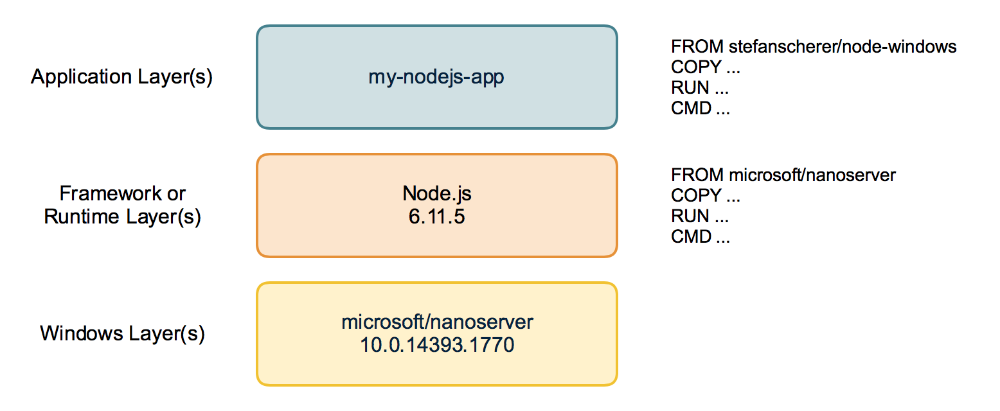
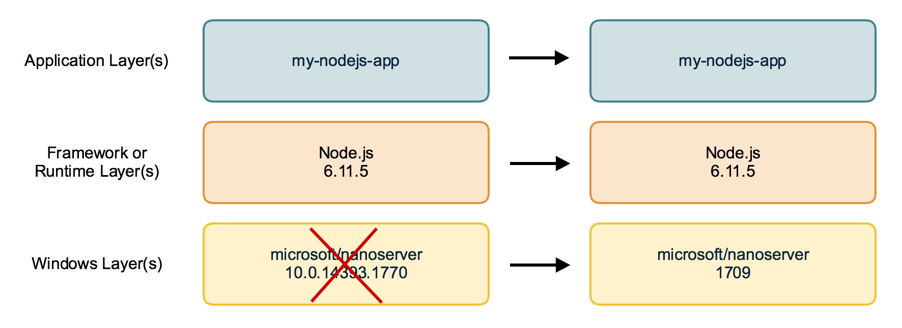
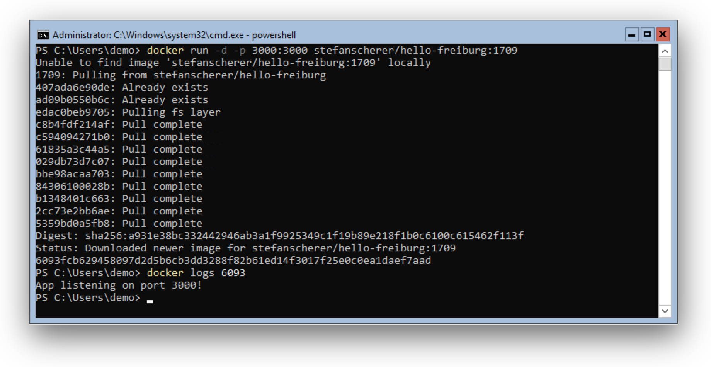

First of all: Happy Halloween! In this blog post you'll see some spooky things - or magic? Anyway I found a way to build Windows Docker images based on the new 1709 images without running on 1709. Sounds weird?
Disclaimer: The tools and described workflow to build such images on old Windows Server versions may break at any time. It works for me and some special cases, but it does not mean it works for any other use-case.
The 2016 <-> 1709 gap
As you might know from my previous blog post there is a gap between the old and new Windows images. You cannot pull the new 1709 Docker images on current Windows Server 2016. This means you also cannot build images without updating your build machines to Windows Server 1709.
AppVeyor
My favorite CI service for Windows is AppVeyor. They provide a Windows Server 2016 build agent with Docker and the latest base images installed. So it is very simple and convenient to build your Windows Docker images there. For example all my dockerfiles-windows Dockerfiles are built there and the images are pushed to Docker Hub.
I guess it will take a while until we can choose another build agent to start building for 1709 there.
But what should I do in the meantime?
- Should I build all 1709 images manually on a local VM?
- Or spin up a VM in Azure? It is possible since today.
But then I don't have the nice GitHub integration. And I have to do all the maintenance of a CI server (cleaning up disk space and so on) myself. Oh I don't want to go that way.
Docker images have layers
Let's have a closer look at how a Docker image looks like. Each Docker image contains of one or more layers. Each layer is read-only. Any change will be done in a new layer on top of the underlying ones.
For example the Windows Docker image of a Node.js application looks more or less like this:

At the bottom you find the Windows base image, then we add the Node.js runtime. Then we can add our application code on top of that. This is how a Dockerfile works. Every FROM, RUN, ... is an extra layer.
Technically all layers are just tarballs with files and directories in it. So when the application and framework layer are independent from the OS system layer it should be possible to rearrange them with a new OS layer.
Rebase Docker image
That is what I have tried to find out. I studied the Docker Hub API and wrote a proof of concept to "rebase" a given Windows Docker image to swap the old Windows OS layers with another one.
The tool works only with information from Docker Hub so it only retrieves metadata and pushes a new manifest back to the Docker Hub. This avoids downloading hundreds of megabytes for the old nanoserver images.
Use cases
- Easily apply Windows Updates to an existing Windows app in seconds. Only the update layer will be swapped.
- Provide your app for all available Windows Update layers to avoid download.
- Sync multiple images based on different Windows Update layers to the current to avoid downloading several different udpate layers for a multi-container application.
- Create images for Server 1709 without having a machine for it.
Limits
- You cannot move an app from a windowsservercore image to the nanoserver image.
- You also cannot move PowerShell scripts into the 1709 nanoserver image as there is no PowerShell installed.
- Your framework or application layer may has modified the Windows registry at build time. It then carries the old registry that may not fit to new base layer.
- Moving such old application layers on top of new base layers is some kind of time travel. Be warned that this tool may create corrupt images.
You can find the rebase-docker-image tool on GitHub. It is a Node.js command line tool which is also available on NPM.
The usage looks like this:
$ rebase-docker-image \
stefanscherer/hello-freiburg:windows \
-t stefanscherer/hello-freiburg:1709 \
-b microsoft/nanoserver:1709
You specify the existing image, eg. "stefanscherer/hello-freiburg:windows" which is based on nanoserver 10.0.14393.x.
With the -t option you specify the target image name that where the final manifest should be pushed.
The -b option specifies the base image you want to use, so most of the time the "microsoft/nanoserver:1709" image.

When we run the tool it does its job in only a few seconds:
Retrieving information about source image stefanscherer/hello-freiburg:windows
Retrieving information about source base image microsoft/nanoserver:10.0.14393.1715
Retrieving information about target base image microsoft/nanoserver:1709
Rebasing image
Pushing target image stefanscherer/hello-freiburg:1709
Done.
Now on a Windows Server 1709 we can run the application.

I tried this tool with some other Windows Docker images and was able to rebase the golang:1.9-nanoserver image to have a Golang build environment for 1709 without rebuilding the Golang image by myself.
But I also found situations where the rebase didn't work, so don't expect it to work everywhere.
AppVeyor CI pipeline
I also want to show you a small CI pipeline using AppVeyor to build a Windows image with curl.exe installed and provide two variants of that Docker image, one for the old nanoserver and one with the nanoserver:1709 image.
The Dockerfile uses a multi-stage build. In the first stage we download and extract curl and its DLL's. The second stage starts again with the empty nanoserver (the fat one for Windows Server 2016) and then we just COPY deploy the binary into the fresh image. An ENTRYOINT finishes the final image.
FROM microsoft/nanoserver AS download
ENV CURL_VERSION 7.56.1
WORKDIR /curl
ADD https://skanthak.homepage.t-online.de/download/curl-$CURL_VERSION.cab curl.cab
RUN expand /R curl.cab /F:* .
FROM microsoft/nanoserver
COPY --from=download /curl/AMD64/ /
COPY --from=download /curl/CURL.LIC /
ENTRYPOINT ["curl.exe"]
This image can be built on AppVeyor and pushed to the Docker Hub.
The push.ps1 script pushes this image to Docker Hub.
docker push stefanscherer/curl-windows:$version-2016
Then the rebase tool will be installed and the 1709 variant will be pushed as well to Docker Hub.
npm install -g rebase-docker-image
rebase-docker-image `
stefanscherer/curl-windows:$version-2016 `
-t stefanscherer/curl-windows:$version-1709 `
-b microsoft/nanoserver:1709
To provide my users the best experience I also draft a manifest list, just like we did for multi-arch images at the Captains Hack day. The final "tag" then contains both Windows OS variants.
On Windows you can use Chocolatey to install the manifest-tool. In the future this feature will be integrated into the Docker CLI as "docker manifest" command.
choco install -y manifest-tool
manifest-tool push from-spec manifest.yml
The manifest.yml lists both images and joins them together to the final stefanscherer/curl-windows image.
image: stefanscherer/curl-windows:7.56.1
tags: ['7.56', '7', 'latest']
manifests:
-
image: stefanscherer/curl-windows:7.56.1-2016
platform:
architecture: amd64
os: windows
-
image: stefanscherer/curl-windows:7.56.1-1709
platform:
architecture: amd64
os: windows
So on both Windows Server 2016 and Windows Server 1709 the users can run the same image and it will work.
PS C:\Users\demo> docker run stefanscherer/curl-windows
curl: try 'curl --help' or 'curl --manual' for more information
This requires the next Docker 17.10 EE version to work correctly, but it should be available soon. With older Docker engines it may pick the wrong version of the list of Docker images and fail running it.
Conclusion
This way to "rebase" Docker images works astonishingly good, but keep in mind that this is not a general purpose solution. It is always better to use the correct version on the host to rebuild your Docker images the official way.
Please use the comment below if you have further questions or share what you think about that idea.
Stefan
@stefscherer